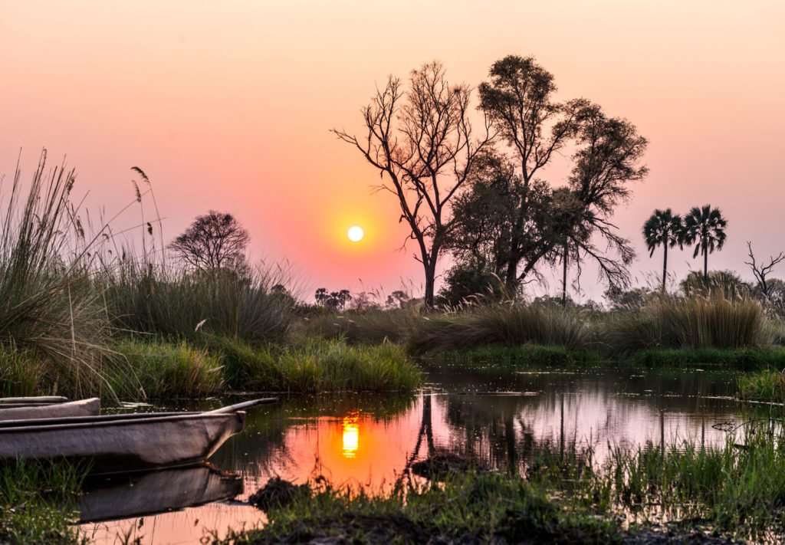
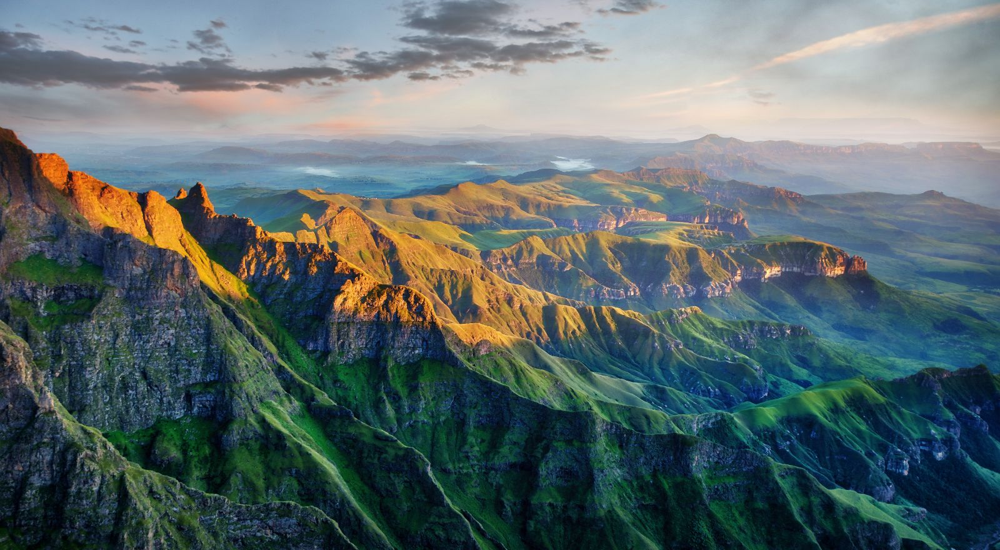

Pick a location and start your Adventure

One of Africa's largest inland deltas, known for its mokoro canoes, safaris and wildlife
Coastal city with Table Mountain, beaches and vineyards. Great for hiking, sightseeing and food.
One of the Seven Wonders of the World, it is the largest falling curtian of water on earth.
Best views are from April to May when water flow is at its peak.
The world's oldest desert, famous for its towering red sand dunes in Sossusvlei.
Tanzania's coast with white sand beaches, turquoise water and spice-scented air.

Dramatic peaks and valleys with hiking trails, waterfalls and ancient rock art.